How to put a GitHub Pages site on a custom domain in 14 minutes, without touching DNS
Custom domains make a project feel real. But for many developers, the
last mile, DNS, is also the most frustrating: A records,
CNAME entries, TTLs, and that long wait where you're never
quite sure if the internet is broken or you are.
In this post, I'll walk through how I took a project from an empty repository to a live website on a custom domain, secured with HTTPS, in about 14 minutes, without manually editing a single DNS record. The trick is to let GitHub Copilot CLI drive the work, with a community Namecheap skill handling the DNS automation through the registrar's API.
Here's what you'll learn how to do:
- Publish a site with GitHub Pages
- Register an inexpensive domain
- Enable your registrar's API and connect it to Copilot CLI
- Point the domain at GitHub Pages and verify it end to end
Let's get started. ⤵
What you'll need
- A GitHub account (the free tier works)
- GitHub Copilot CLI, installed and authenticated
- A Namecheap account, for buying the domain and using its API
No prior DNS expertise required. That's the whole point.
Step 1: Publish a site with GitHub Pages
Every deployment needs something to deploy, so start with a home for the site: a new public repository.
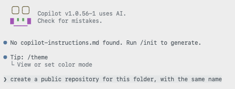
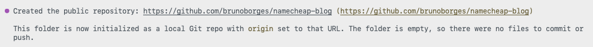
With the repository in place, you don't have to hand-write an
index.html, commit it, and then click through the Pages
settings yourself. Instead, describe the outcome you want to Copilot CLI
and let it create the landing page and enable GitHub Pages for you.
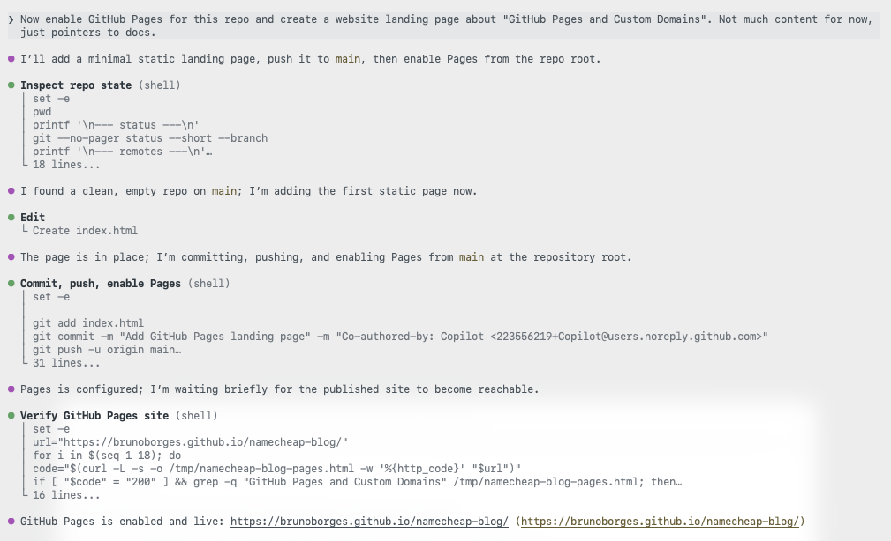
The site is now live on a github.io URL. That's a solid
start. Now let's give it a proper address.
Step 2: Register an inexpensive domain
You don't need a premium .com to ship a side project.
For this walkthrough I chose one of the cheapest top-level domains
available, .click, and searched for an available name.
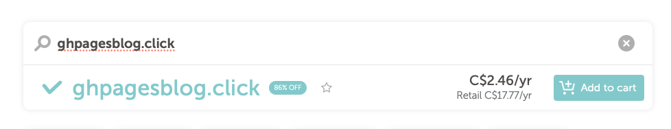
ghpagesblog.click was available, so I moved to
checkout.

The total came to USD $2.00, or about CAD $2.46. That's a low-risk price for trying a custom domain on a side project.
Step 3: Connect the domain to GitHub Pages
This is the step developers tend to dread. Here, an AI assistant does the repetitive work while you stay in control of the decisions.
Enable Namecheap API access
Before Copilot CLI can update your DNS, you need to turn on Namecheap's API. In your Namecheap account, go to Profile → Tools, scroll to Business & Dev Tools, and select Manage under Namecheap API Access.
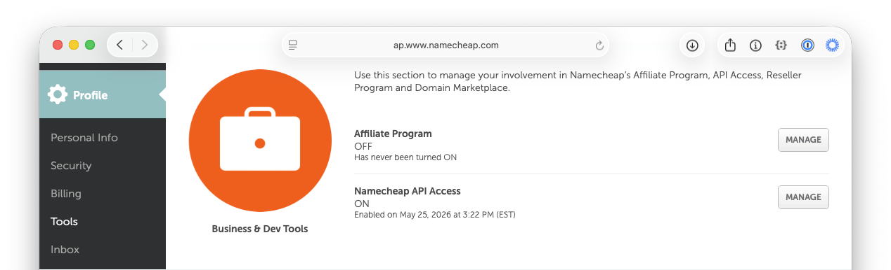
You can also navigate directly to the API access settings page (note that this URL may change over time).
On that page, complete three steps:
- Toggle the API to ON.
- Add the public IP of the machine that will call the API to the Whitelisted IPs list.
- Copy the API Key and store it somewhere safe. You'll need it shortly.
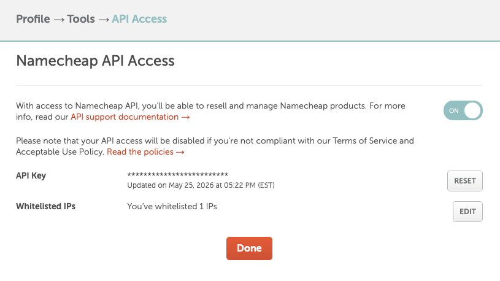
For more detail on what the API offers, see Namecheap's API introduction.
Install the Namecheap skill
Next, give Copilot CLI the ability to talk to Namecheap by installing the Namecheap skill. It's a single command:
gh skill install brunoborges/namecheap-skill namecheap-dns --scope userThe first time you ask Copilot to do something like "list my Namecheap domains," it confirms the skill is configured and prompts you for your username.
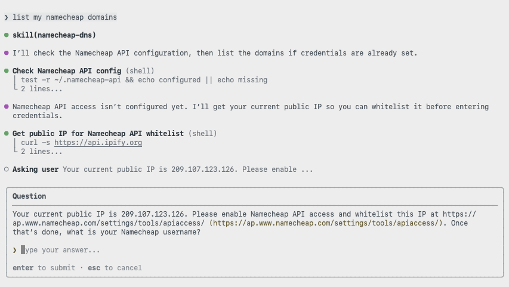
Then it asks for the API key you copied earlier.

With credentials in place, Copilot returns the list of domains in your account. It's a quick way to confirm everything is wired up correctly before making any changes.

Point the domain at GitHub Pages
Now connect the domain to the site. Ask Copilot to configure the custom domain using the skill.

A good automation asks before it acts. The skill pauses to confirm the change before touching any records.
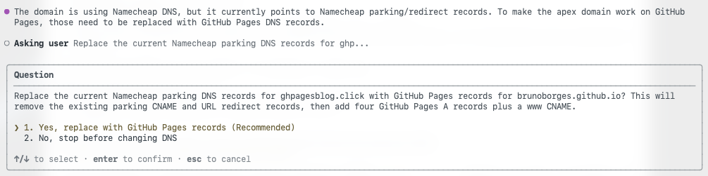
Once you approve, it replaces the existing parking records with the
GitHub Pages A records and a CNAME for the
www subdomain, which is the exact configuration GitHub
Pages expects. This matches GitHub's documented steps for configuring
a custom domain for your GitHub Pages site.
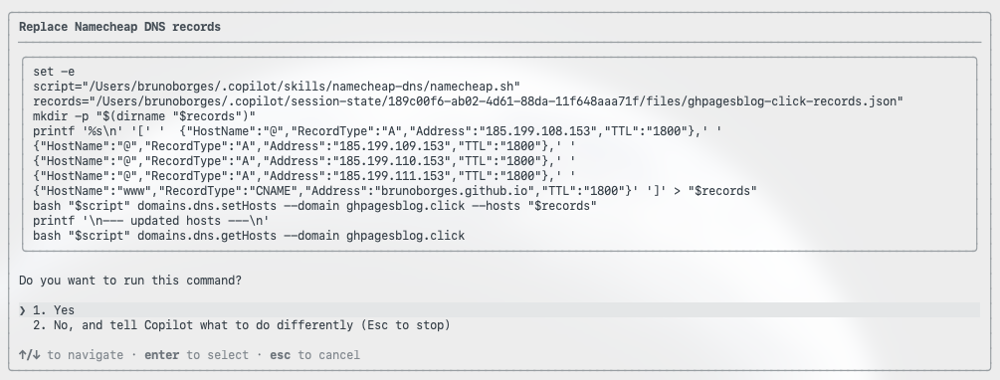
It also handles the repository side, committing a CNAME
file that tells GitHub Pages which custom domain the site should answer
to.
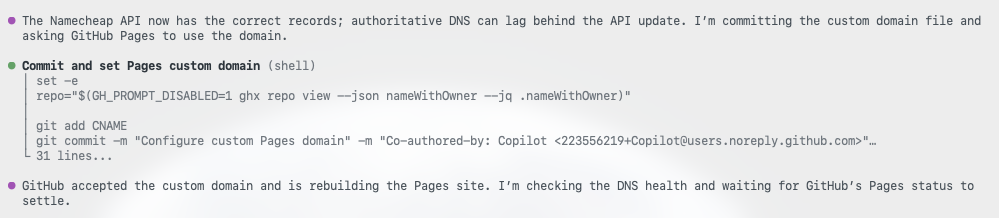
Step 4: Verify the deployment
Rather than assuming success, Copilot CLI checks its own work. First, it confirms the domain resolves.

Then it confirms the site returns a healthy HTTP 200 response.

If you'd like to review every prompt and response, the full Copilot CLI session is available as a gist.
Now for the timeline. The domain was purchased at 11:21:27 AM EDT.
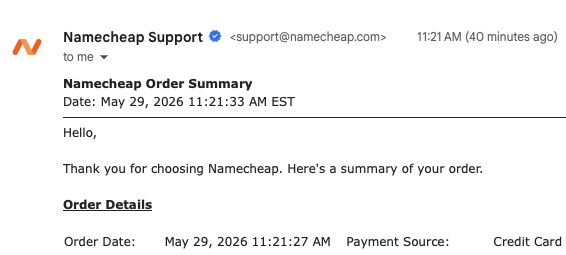
The site was live on the custom domain, served over HTTPS, at around 11:35 AM EDT. That's roughly 14 minutes from owning nothing to a fully deployed site, including API setup, skill installation, DNS configuration, propagation, and verification.
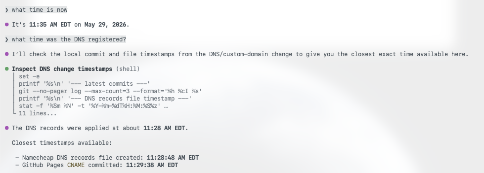
Wrapping up
DNS isn't hard, exactly, but it's fiddly, easy to get wrong, and slow to give feedback. By pairing GitHub Pages with GitHub Copilot CLI and the Namecheap skill, the repetitive parts of a custom-domain deployment fade into a short conversation: you make the decisions and approve the changes, and the tooling handles the plumbing.
If you've been putting off a custom domain because the DNS step feels like a chore, this workflow removes the friction. To go further, explore the GitHub Pages documentation and the guide to configuring a custom domain for your GitHub Pages site, then try it on your next project.